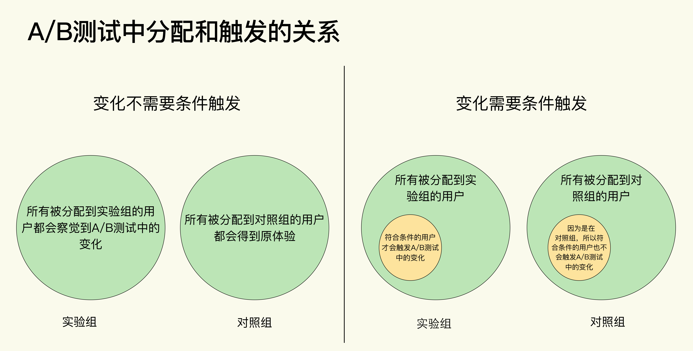
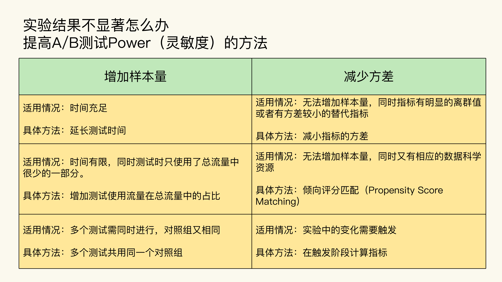

- 00 开篇词 用好A_B测试，你得这么学.md.html
- 01 统计基础（上）：系统掌握指标的统计属性.md.html
- 02 统计基础（下）：深入理解A_B测试中的假设检验.md.html
- 04 确定指标：指标这么多，到底如何来选择？.md.html
- 05 选取实验单位：什么样的实验单位是合适的？.md.html
- 06 选择实验样本量：样本量越多越好吗？.md.html
- 07 分析测试结果：你得到的测试结果真的靠谱吗？.md.html
- 08 案例串讲：从0开始，搭建一个规范的A_B测试框架.md.html
- 09 测试结果不显著，要怎么改善？.md.html
- 10 常见误区及解决方法（上）：多重检验问题和学习效应.md.html
- 11 常见误区及解决方法（下）：辛普森悖论和实验组_对照组的独立性.md.html
- 12 什么情况下不适合做A_B测试？.md.html
- 13 融会贯通：A_B测试面试必知必会（上）.md.html
- 14 举一反三：A_B测试面试必知必会（下）.md.html
- 15 用R_Shiny，教你制作一个样本量计算器.md.html
- 加餐 试验意识改变决策模式，推动业务增长.md.html
- 导读 科学、规范的A_B测试流程，是什么样的？.md.html
- 结束语 实践是检验真理的唯一标准.md.html
- 捐赠
09 测试结果不显著，要怎么改善？
你好，我是博伟。
通过“基础篇”的学习，你已经掌握了A/B测试的整体流程，那就可以参照这些流程设计一次A/B测试了。不过在具体实施的过程中，你会因为业务的复杂性、没有严格遵守规范的流程，或者数据本身的属性等，不可避免地遇到一些问题。
没错儿，这就是我在开篇词中和你说的，A/B测试的实践性非常强，你需要能够识别那些潜在的坑，并找到相应的解决方法。所以在接下来的三节课里，我会带你去看看我积累的经验，曾经踩过的坑，让你在实践时能提前规避，少出错。
今天，我们就先从一个很痛的问题开始吧。在第7节课我们学习如何得到可信赖的测试结果，以及如何分析测试结果时，非常顺利地得出了对照组和实验组指标显著不同的结果。不知道你脑海中会不会一直萦绕着这么一个问题：我也是按照这个流程来设计A/B测试的啊，为什么我的实验结果不显著呢，我应该据此得出“两组指标事实上是相同的”结论吗？
今天这节课，我们就来深入剖析“测试结果如何不显著怎么办”这个大家经常遇到的问题。
为什么会出现“实验结果不显著”？
首先我们要搞清楚，为什么会出现“实验结果不显著”？有两方面原因。
- A/B测试中的变化确实没有效果，所以两组的指标在事实上是相同的。
- A/B测试中的变化有效果，所以两组的指标在事实上是不同的。但是由于变化的程度很小，测试的灵敏度，也就是Power不足，所以并没有检测到两组指标的不同。
如果是第一种原因，就证明这个变化对产品/业务优化没有效果。那我们要考虑放弃这个变化，或者去测试新的变化。
如果是第二种原因，那我们可以从A/B测试的角度进行一些优化和调整。具体来说就是，通过提高Power来提高A/B测试检测到实验结果不同的概率。在第6节课我讲过了，Power越大，越能够准确地检测出实验组与对照组的不同。所以当我们提高了Power之后，如果仍然发现测试结果不显著，这样才能得出“两组指标事实上是相同的”的结论。
有什么方法可以提高Power呢？
我们再来回顾下第6节课讲到的样本量估算公式：- \(\\mathrm{n}=\\frac{\\left(Z\_{1-\\frac{\\alpha}{2}}+Z\_{1-\\beta}\\right)^{2}}{\\left(\\frac{\\delta}{\\sigma\_{\\text {pooled}}}\\right)^{2}}=\\frac{\\left(Z\_{1-\\frac{\\alpha}{2}}+Z\_{\\text {power}}\\right)^{2}}{\\left(\\frac{\\delta}{\\sigma\_{\\text {pooled}}}\\right)^{2}}\)- 其中:- \(Z\_{1-\\frac{\\alpha}{2}}\) 为 \(\\left(1-\\frac{\\alpha}{2}\\right)\) 对应的 \(Z\) Score。- \(Z\_{\\text {Power}}\) 为 Power 对应的 \(Z\) Score。- \(\\delta\) 为实验组和对照组评价指标的差值。- \(\\sigma\_{\\text {pooled}}^{2}\) 为实验组和对照组的综合方差 (Pooled Variance)。
在公式里，我们找出影响Power的因素，也就是样本量和方差。其中：
- 样本量和Power成正比。即通过增大样本量就可以提高Power。
- 方差和Power成反比。即通过减小方差就可以提高Power。
具体来说，实践中，在有条件获得更大样本量的情况下，可以选择增大样本量的方法来提高Power，相对简单易操作。如果受流量或时间限制，没有条件获得更多的样本量，此时可以通过减小方差来提高Power。
接下来，我就分别从增大样本量和减小方差这两个维度，来讲解6种提高Power的具体方法。
如何通过增加样本量来提高Power？
实践中，用来增加样本量的方法主要有三种：延长测试时间，增加测试使用流量在总流量中的占比，以及多个测试共用同一个对照组。
延长测试时间
对于延长测试时间，你肯定不陌生，我在第6节课讲样本量估算时就讲过。每天产生的可以测试的流量是固定的，那么测试时间越长，样本量也就越大。所以在条件允许的情况下，可以延长测试的时间。
增加测试使用流量在总流量中的占比
假设某个产品每天有1万流量，如果我要做A/B测试，并不会用100%的流量，一般会用总流量的一部分，比如10%，也就是测试使用流量在总流量中的占比。
为什么不使用全部流量呢？
一方面，A/B测试有试错成本，虽然出现的概率较低，但是我们在测试中做出的任何改变都有可能对业务造成损害。所以，使用的流量越少，试错成本越低，也就越保险。
另一方面，在大数据时代，对于互联网巨头来说，由于本身就拥有巨大的流量，那么产品本身做出的任何比较明显的改变，都有可能成为新闻。
比如要测试是否要增加一个新功能时，公司并不想在测试阶段就把这个新功能泄露给用户，以免给用户造成困扰。所以它们一般会先使用很小比例的流量来做A/B测试（比如1%），确定得到显著结果后再把A/B测试中的变化慢慢推广到100%的流量。
所以，在保持测试时间不变的情况下，还可以通过增加测试使用流量在总流量中的占比，来达到增加样本量的目的。
多个测试共用同一个对照组
有时我们会在同一个产品上同时跑多个A/B测试，比如我们想要提升推送的点击率，就会在原推送的基础上改变推送的标题、推送的内容、推送的时间、推送的受众，等等。
对于这四个不同的影响因素，事实上，改变每一个因素都是一个独立的A/B测试。那理论上我们就需要设计4个实验，需要有4个实验组和4个对照组。
假设我们现在的可用流量一共是8万，那么每组就有1万流量。但是你会发现这样流量的利用率太低了，因为每个实验的对照组其实都是一样的（原推送）。但如果我们把4个对照组合并成一个，这样的话就变成了4个实验组和1个对照组，每组就有1.6万流量。
你看，在同一个基础上想同时验证多个变化，也就是跑多个A/B测试有相同的对照组的时候，我们可以把对照组合并，减少分组数量，这样每组的样本量也会增加。这种测试又叫做A/B/n测试。
总结来说，在实践中：
- 如果时间允许，最常用的是延长测试时间的方法，因为操作起来最简单。
- 如果时间不充足的，可以优先选择增加测试使用流量在总流量中的占比，因为可以节省时间。
- 当有多个测试同时进行，而且对照组又相同的情况下，就可以把多个对照组合并成一个。
通过增加样本量来提高Power，是实践中最常见的方法，但是业务场景千变万化，虽然不常见，但有时候确实没有办法获得更多的样本，比如时间紧迫，同时已经使用了100%的总流量，结果还是不显著，那这个时候就要通过减少方差来提高Power了。
如何通过减小方差来提高Power？
实践中常用的减少方差的方法也有三种：减小指标的方差，倾向评分匹配，以及在触发阶段计算指标。
减小指标的方差
减小指标的方差有两种方式。
第一种方式：保持原指标不变，通过剔除离群值（Outlier）的方法来减小方差。
如果我们通过指标的直方图，发现实验的指标分布中有很明显的离群值，就可以通过设定封顶阈值（Capping Threshold）的方法把离群值剔除掉。
比如可以根据指标的分布，只选取95%的取值范围，然后把剩下的5%的离群值剔除掉。常见的指标，比如电商中的人均花费，或者音乐App中的人均收听时间，由于会有些极少热衷于线上购物的用户花费居多，或者音乐发烧友一直在听歌，那么这些极少部分的用户就可能变成离群值，从而增加方差。
第二种方式：选用方差较小的指标。
取值范围窄的指标比取值范围广的指标方差要小。比如点击者量比点击量的方差小（因为一个点击者可以产生多个点击，点击比点击者多，取值范围广）；购买率比人均花费的方差小（因为购买率是表征买或不买的二元事件，只有两个取值，人均花费则可以是任何数量的金钱，理论上有无限的取值范围）；收听率比人均收听时间的方差小；等等。
可以看到，对于表征类似的行为（比如买买买，听音乐，看视频，等等），概率类指标要比均值类指标的方差小。所以在满足业务需求的情况下，如果我们想要减少方差，就可以把均值类的指标转化成表征相似行为的概率类指标，也就是修改原定指标，选用取值范围窄的指标。
倾向评分匹配（Propensity Score Matching）
倾向评分匹配，简称PSM，是因果推断的一种方法，目的是解决实验组和对照组分布不均匀的问题。
你一定还记得我们在第7节课中，学习过分析结果前要进行合理性检验，那么它和PSM是什么关系呢？
我来总结下。如果说合理性检验是帮我们确定两组分布是否相似的方法，那么PSM，就是帮我们找出两组中相似部分的回溯性分析方法。简单来说，两组的各个特征越相似，就说明两组的方差越小。
PSM的基本原理，就是把一组中的数据点，找到在另一组和它们相似的数据点，进行一对一的匹配，这个相似性是通过比较每个数据点的倾向评分（Propensity Score）得到的。如果不理解倾向评分也没关系，你只需要知道这一点就够了：倾向评分越接近，说明两个数据点越相似。这里的一个数据点，指的就是A/B测试中的一个实验单位。
PSM的具体做法如下。
- 首先，把我们要匹配的两组中每个数据点的各个特征（比如用户的性别，年龄，地理位置，使用产品/服务的特征等）放进一个逻辑回归（Logistics Regression）中。
- 然后，算出每个数据点的倾向评分，然后再用诸如最邻近（Nearest Neighbor）等方法进行匹配。
- 最后我们只需要比较匹配后的两组相似的部分即可。
PSM的原理有些复杂，我放了一些资料链接，你可以查看。不过幸运的是，在主要的编程语言Python和R中都有相应的库，比如Python中的pymatch和R中的Matching，让我们的实施变得相对容易些。
在倾向评分匹配这个部分，你只需要记住一个结论就可以了，那就是：PSM能够有效地减少两组的方差。通过比较倾向评分匹配后的两组的相似部分，我们可以来查看结果是否显著。
在触发阶段计算指标
在A/B测试中我们把实验单位进行随机分组的这个过程叫做分配（Assignment）， 同时你要知道，在有些A/B测试中，比如在第8节课的案例中，我们要测试的变化是需要满足一定条件才能触发的。
所以从分配和触发的关系来看，A/B测试可以分为两种。
变化不需要条件触发。所有用户在被分配到实验组后，就都可以体验到A/B测试中的变化。
变化需要条件触发。在被分配到实验组的所有用户中，只有满足一定条件的用户才会触发A/B测试中的变化。

实践中大部分的A/B测试都属于第一种，而且也比较好理解。
但是要注意了，我们这里讲的减小方差的方法只适用于第二种A/B测试，简单来说，就是在计算指标时只考虑每组符合触发条件（黄圆圈）的用户，而不是考虑每组中的所有用户（绿圆圈）。这个不是很好理解，我来举例说明下。
还记得第8节课中我们讲到可以利用弹窗的形式来告知用户“把喜欢的音乐加入收藏夹”新功能的A/B测试吗？在A/B测试的设计中，并不是在实验组的所有用户都会收到弹窗提醒的。
所以为了避免打扰到不相关的用户，把弹窗发送给需要这个功能的用户，我们事先规定了触发弹窗的规则：
- 该用户从来没用过“把喜欢的音乐加入收藏夹”这个功能。
- 该用户已经对某首歌听了4次，当播放第5次时触发弹窗。
那么当我们计算案例中的评价指标时，各组中“把喜欢的音乐加入收藏夹”功能的使用率 = 各组中使用了“把喜欢的音乐加入收藏夹”的用户总数 / 实验中各组的用户总数。
这里的分母“实验中各组的用户总数”就只算满足弹窗触发规则的用户，而不是算所有被分配到实验中各组的用户，这就是在触发阶段计算指标。
这里要注意的是，在对照组也会有用户满足弹窗触发规则的，只不过因为他们在对照组，所以即使他们满足了弹窗触发规则，我们也不会给这些用户发弹窗，我们还是要统计这些人因为要用他们做分母来计算评价指标。
这里对数据埋点熟悉的小伙伴可能要问了：这些符合弹窗触发规则的对照组用户并没有触发弹窗，在数据中并没有相关的记录，我怎么在数据中去记录他们呢？
在工程实现上其实是有一个小技巧的：对于对照组的用户，如果他们符合触发规则，我们就给他们发送一个只有一个像素点的看不见的隐形弹窗，这样的话我们在数据中会有相关记录，方便之后的指标计算，同时又保证了对照组不会受到弹窗的影响。
通过把评价指标的分母变为满足弹窗触发规则的用户，在计算指标时就会排除掉数据中的噪音（那些被分配到实验中但是没有触发弹窗的用户），从而减小方差。
这种需要触发的A/B测试多出现在有固定的用户使用路径的业务中，比如电商。在电商中，用户一般有较明确的多层级的使用路径：进入网站/App —> 浏览商品列表 —> 查看具体商品 —> 加入购物车 —> 购买。
在电商的A/B测试中，一般是在用户进入网站/App时就被分配到实验组或者对照组，如果我们测试之后的环节，比如在“购物车”页面测试新功能，这时候只有进入到“购物车”页面的用户才能触发A/B测试中的变化。
总体而言，通过减少方差来提高Power的情况不多（常见的是通过增加样本量来提高Power）。如果真的遇到这种情况，那么比较简单快速的方法就是减小指标的方差。当然如果有条件的话我还是推荐更加科学的倾向评分匹配（PSM）。那么对于在A/B测试中的变化存在触发的情况下，就一定要在触发阶段计算指标。
小结
为了解决A/B测试结果不显著的问题，这节课我们主要讲解了提高A/B测试Power的6种方法，我把它们从原理上分成了两大类：

你可以根据我对每种方法的介绍，以及在什么情况下选用哪种方法，灵活应用。
如果在尝试过这些方法后，重新跑实验得出的测试结果还不显著，那就说明两组的指标事实上是相同的，我们就要放弃这个A/B测试中的变化，用其他的变化来优化业务和产品。
最后再强调一下，做出一个能真正提升业务的改变并不容易。从美国FLAG这些大厂披露出来的实验数据来看，A/B测试得到真正显著的结果并最终实施变化的概率，还不到三分之一。
所以也不要气馁，虽然不是每次实验都会有显著的结果，但是你可以从每次实验中学到新的知识（比如变化到底对业务有没有效果），沉淀新的方法论，还能从中发现业务、数据或者工程上潜在的一些问题。这些个人技能上的成长、业务流程上的完善，都是非常宝贵的。
思考题
在某次A/B测试中，你是不是也遇到过没能得到显著结果的情况？你当时是怎么处理的，有没有从实验中获得一些宝贵的经验？
欢迎在评论区留言、讨论，也欢迎点击“请朋友读”，把今天的内容分享给你的同事、好友，和他一起学习、成长。好，感谢你的收听，我们下节课再见。
© 2019 - 2023 Liangliang Lee. Powered by gin and hexo-theme-book.